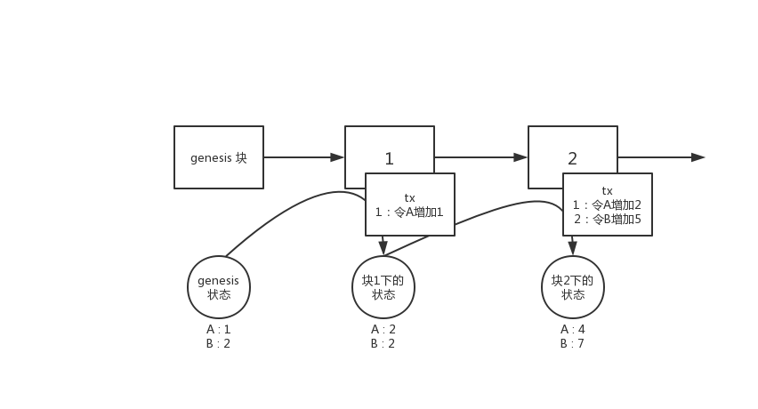
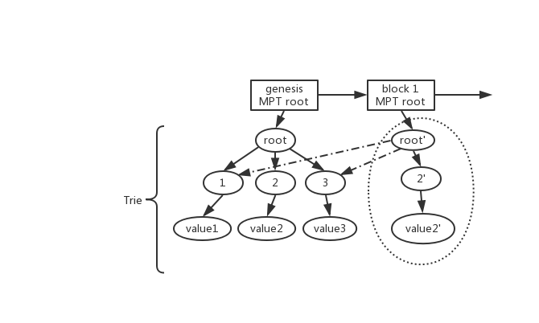

Substrate 入门 - 具备状态的链 -（三）
本文首先介绍substrate的模型基础。在能理解了“链的状态”和“交易”关系后，在此模型下才可深入Substrate的设计当中。
结论
首先先表述结论：Substrate的数据模型与以太坊一致，是基于MPT（Merkle Patricia Tree）的“全历史世界状态”模型。
这里展开讲一点：
当前区块链用于对业务进行建模的模型主要有两类：
- UTXO 模型，即比特币及其分支的模型
- 状态模型，即以以太坊为代表，包含eos及其他区块链等以记录状态为主的模型
因为当前主流描述业务的方式主要还是以状态迁移的模型去建模业务，因此状态模型的区块链能更容易支持更广泛的场景。
本系列只介绍状态模型，UTXO模型请参照笔者之前关于比特币的相关文章。
状态区块链
对于没有接触过状态区块链的开发者而言，首先请记住以下一些基础概念：
- 当前状态是从genesis（即第0块，初始状态）开始，通过交易或其他方式产生了状态变更，不断累计出来的。
- 状态并不是储存块中，而是节点自身独立维护的。
- 块中记录的是“状态迁移”的方式

如上图所示即是一个链的状态变化的过程。
比如在genesis的时候，状态为A:1 B:2 而经过块1的过程后，通过交易（tx）或其他因素，将A的状态修改成了2，因此在块1下的“世界状态”就变为了A:2 B:2。块2以此类推。
因此实际上块中并不是记录当前的状态，而是节点自己本地维护了一个“世界状态”。这个状态就是存在本地的数据库中。而块中保存的时“状态迁移”，“状态迁移”就是交易（或其他因素），节点同步/执行了一个区块后，通过区块中含有的迁移状态的方式（即是在执行这个区块），修改自己的本地状态，从而当一个块执行完毕后，本地当前的状态即为这个块下的状态。
而对于当前状态模型的链而言，一般情况下会具备如下的特性：
- 最新块（最高块）下的状态即为当前的状态，在这个状态下可以获取当前所有对象的状态。
- 块中含有对这个块下的状态的证明（即状态的统一性经过了节点间共识）
- 可以通过任意一个历史的区块，取到在这个区块下的状态（如当前最高块已经是2，而通过1块中的相关信息可以取到
A:2而不是最高块下的A:4）
这3个条件中只有1是必须满足的，往后越达成一个条件，需要付出的代价就要更多。若能满足这3个条件，即是“全历史世界状态”。
当然这里的词“全历史世界状态”是笔者自己造的，因为在以太坊的那个时代，还只有“世界状态”的概念。而实际上以太坊的“世界状态”是将每一个块的那个时刻的状态都做了“快照”，可以恢复到任意块的时候下的状态，也就是将全部的“状态变化历史”都保存下来的方式，因此笔者对这种模型命名为“全历史状态”。但是显然，这种方式将会将所有过去的历史都存下来，因此会造成数据量十分庞大。因此这种方式是状态区块链的一个极端。
而牺牲第3个条件，保留状态证明与只保留最新状态是一种权衡。而第3点就不再交由链来维护，而交给第三方的附属设施维护，如中心化数据库，区块链浏览器等等。
若连第2个条件也不用，则是状态模型的另一种极端，这种极端一定情况下牺牲了共识状态安全性。这种方式带来的好处是实现上比较简单。这即是eos的模型。
MPT 实现的世界状态
由于Substrate采用了和以太坊一样的模型，因此满足上述的3个条件。在Substrate中MPT简称为trie。
对于MPT实现的原理这里不进行详细描述。简单来说MPT的实现和git，IPFS中的IPLD模型等原理上都是一致的，用一句话描述就是：
使用DAG的方式，只记录每次变更后的索引（hash）。
如下图所示：

例如在上文提到的状态A:1 B:2，将A，B分别看做两个key，在MPT中key就是树的路径，而1,2是key对应的值，在MPT中就是叶子节点。因此A:1 B:2 变更到A:2 B:2的这个过程中，对应到上图相当于：
- 从 root -> 2 -> value2 相当于记录了
A:1，从root->3->value3的过程相当于记录了B:2 - 从genesis到 block1 的过程中，A的状态发生了变化，从1变成了2
- 在MPT 中由于A的值发生了变化，因此MPT生成了一个新的叶子节点代表A的新状态，然后从叶子节点重新生成一个新的索引路径，即图中的
value2' -> 2'-> root'的过程 - 而在生成新路径的过程中，由于B的状态没有发生变化，因此在生成新的路径的过程中，直接索引了B的老路径（即图中的虚线）。
- 因此如上图所示，通过新的树根
root'索引到的A和B的值分别是A：2（即新的A的状态）与B：2（即老的B的状态）
如以上过程所示，每一个新的树跟记录的这个树根下状态的索引，因此每一个树跟即是每一个状态的DAG的起点，通过这个起点，可以获取到所有的状态。
每个区块都会含有状态变更，而每次变更即是通过以上类似过程生成一个新的树根，这个根root在以太坊及Substrate中被称为状态根 state_root，放入每一个区块的区块头中，作为当前这个区块进行共识的状态证明。而通过以上方式也可以看出，只要从任意区块中取出状态根，那么就可以获取到这个状态根下那个时刻的所有状态的值。（对于相当同的key A，通过 root 索引出 value2，通过 root' 索引出 value2'）
因此，MPT这种数据结构描述的世界状态，满足上述所说的3个条件。
另一个角度
抛开以上原理不谈，我们可以将trie看成一个K-V数据库，这个数据库通过给予的Key能够获取到对应的Value。只不过这个k-v数据库通过给予一个root可以索引出在这个root的那个时刻下的对应数据。
也就是说trie实现的链上状态就是一个带快照的k/v数据库。每一个块就是对当前数据库全部数据的快照，块的时间戳代表了那个时刻下的数据状态，通过块中的状态根可以获取那个时刻下的数据。
而在打包执行当前区块时使用的root即是上一个区块的root，也就是打包区块时取当前最新的状态。
在Substrate中对于Runtime层而言，提供的接口即是
- get(key) -> value
- set(key, value) / remove(key)
这样的接口对于Runtime而言，可以直接将trie树看做一个key/value数据库即可，屏蔽了所有的trie树细节。
因此对于初学者而言，若目前还不是很容易搞清楚trie树的实现细节，那么就不用关心，只需要记住Substrate的读写数据模型是key/value数据库即可。
总结
实际上状态模型区块链即使通过各种实现方式，能够在每个块下记录这个块当前的状态（key/value）。只不过使用mpt树实现的“全历史世界状态”是包含上文提到的3种性质的一种实现，这是一种极端，包含了证明与历史，但对应的也会带来数据的膨胀。
Substrate采用的是这种MPT树实现的状态区块链模型。